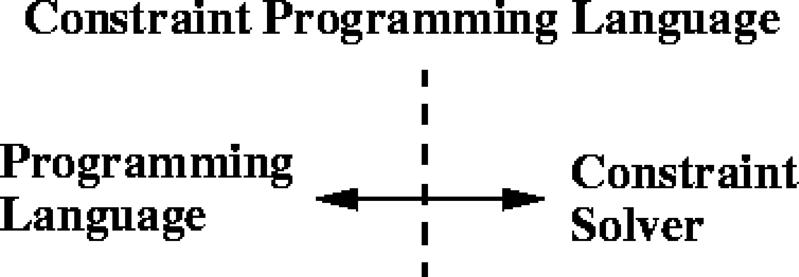

Constraint-logic-Programmierung
Programmierparadigmen
Ziele
- Zusammenhänge zwischen Logik- und Constraint-Programmierung verstehen
- Kennenlernen einer Alternative zu Prolog - miniKanren
Constraint Logic Programming (CLP)
- wichtige Quelle: Carro1998
Vorbemerkungen
- Traditionelle Logikprogrammierung kennt nur eine Art von Constraint: Logische Äquivalenz über Termen
- Constraint-Logikprogrammierung unterstützt weitere Arten von Constraints:
- Constraints über endlichen Wertebereichen (finite domains, CLP(FD)),
- Constraints über Mengen (CLP(Set)),
- Unifikation von Variablen wird ersetzt durch Prüfung der Erfüllbarkeit (satisfaction) von Constraints.
- Der typische Lösungsweg in der Constraint-Logikprogrammierung:
- Analyse des zu lösenden Problems, um zu verstehen, aus welchen Teilen es besteht.
- Bestimmung der Bedingungen/Relationen, die zwischen den Teilen gelten: Diese sind der Schlüssel zur Lösung, weil mit ihrer Hilfe das Problem modelliert wird.
- Formulierung der Bedingungen/Relationen als Gleichungen; der Charakter der Gleichungen kann Hinweise auf die Art des zu verwendenden C(L)P-Systems geben.
- Lösung der Gleichungen; dies geschieht in der Regel transparent für den Benutzer, da die Sprache einen „eingebauten” Löser benutzt.
- Typische Anwendungsbereiche:
- Anwendungen, für die keine effizienten Algorithmen existieren (NP-completeness)
- Anwendungen, deren Problemspezifikation sich häufig ändert: hier sollte einfach möglich sein, das Programm schnell zu ändern (rapid prototyping).
- Anwendungen, die Entscheidungsunterstützung erfordern – entweder automatisch durch das Programm und in Kooperation mit dem Benutzer. Viele Entscheidungen können durch mathematische Formeln codiert werden, aber nicht alle.
- konkret: Planung, Ressourcen-Zuweisung, Logistik/Transport, Schaltkreisentwurf und -verifikation, Zustandsmaschinen, Finanzwesen, Verarbeitung raumbezogener Daten (Navigation), …
Implementierung
Sprachschnittstellen
- Benutzung einer Bibliothek, die Gleichungen, Variablen etc. implementiert, in einer Wirtssprache

- Benutzung einer Sprache mit erweiterter Semantik: Variablen können zu anderen in Beziehung gesetzt werden und unbestimmete Werte enthalten.

Anforderungen an CP-Sprachen
- Es muss ein Constraint-solver zur Verfügung stehen, der Gleichungen löst bzw. ihre Unlösbarkeit mitteilt.
- Sprachmittel für die Formulierung von Gleichungen, Formeln etc.
- Eine Schnittstelle zum Constraint-solver, die es erlaubt, Einschränkungen zu übermitteln und Lösungen entgegen zu nehmen.
Beispiel: Send more money
Mehr Geld bitte!
Sie senden einen Brief an Ihre Eltern mit dem Inhalt:
SEND
+MORE
-----
MONEY
Wieviel Geld erhalten Sie?
Die Aufgabe besteht darin, jedem Buchstaben aus \(\{S,E,N,D,M,O,R,Y\}\) eine unterschiedliche Ziffer aus \(\{0,...,9\}\) zuzuordnen, so dass die Gleichung \[SEND+MORE=MONEY\] erfüllt wird.
Lösungsansatz: „Rohe Gewalt“
- Alles durchprobieren!
- Man braucht 8 ineinander geschachtelte Schleifen.
- Achtung: Acht Variablen (
S,E,N,D,M,O,R,Y) können zehn verschiedene Werte annehmen. Ergibt \(10^{8}\) Möglichkeiten. - Allerdings verringern einschränkende Bedingungen die Zahl der Möglichkeiten:
SundMdürfen nicht \(0\) sein.- Da
Mals Übertrag entsteht, kannMnur \(1\) sein. - Die Werte der Variablen müssen paarweise verschieden sein.
- Weitere logische Überlegungen über Zusammenhänge zwischen den Ziffern können das Verfahren beschleunigen (s. u.).
- Lösung z. B. in Clojure:
(for [s (range 1 10) e (range 0 10) n (range 0 10) d (range 0 10) m (range 1 2) o (range 0 10) r (range 0 10) y (range 0 10) :let [z [s e n d m o r y]] :when (and (distinct? s e n d m o r y) (= (+ (* 1000 s) (* 100 e) (* 10 n) d (* 1000 m) (* 100 o) (* 10 r) e) (+ (* m 10000) (* 1000 o) (* 100 n) (* 10 e) y)))] z)
Lösungsansatz: Constraint Satisfaction
- Einfaches Modell durch Spezifikation der folgenden Gleichung als Einschränkung: \[1000*S+100*E+10*N+D \] \[+ 1000*M+100*O+10*R+E \] \[= 10000*M+1000*O+100*N+10*E+Y\]
- Den Variablen \(E, N, D, O, R, Y\) wird die Domäne \(\{0 \ldots 9\}\), der Variablen \(S\) die Domäne \(\{1 \ldots 9\}\) und \(M\) die Domäne \(\{1\}\) zugeordnet.
- Außerdem muss die Einschränkung \(all\_different([S,E,N,D,M,O,R,Y])\) hinzugefügt werden.
- Das Modell ist nicht effizient, weil alle Variablen bis auf eine schon belegt sein müssen, bevor die „Haupteinschränkung” geprüft werden kann.
Implementierung in Prolog …
… unter Nutzung der Constraint Logic Programming over Finite Domains Library
:- use_module(library(clpfd)). %Nutzung der Constraint Logic % Programming over Finite Domains Library sendmore(Digits) :- Digits = [S,E,N,D,M,O,R,Y], % Liste der Variablen Digits ins 0..9, % Zuordnung von Wertebereichen an Variablen S #\= 0, % Constraint: S muss ungleich 0 sein, ... M #\= 0, % ebenso M all_different(Digits), % alle Elemente von Digits müssen % unterschiedliche Werte haben 1000*S + 100*E + 10*N + D % Haupt-Constraint + 1000*M + 100*O + 10*R + E #= 10000*M + 1000*O + 100*N + 10*E + Y, label(Digits). % sorgt für die Belegung aller Variablenwerte
Implementierung in Standard-Prolog
select(X, [X|R], R). select(X, [Y|Xs], [Y|Ys]):- select(X, Xs, Ys). assign_digits([], _List). assign_digits([D|Ds], List):- select(D, List, NewList), assign_digits(Ds, NewList). smm :- X = [S,E,N,D,M,O,R,Y], Digits = [0,1,2,3,4,5,6,7,8,9], assign_digits(X, Digits), M = 1, S > 0, 1000*S + 100*E + 10*N + D + 1000*M + 100*O + 10*R + E =:= 10000*M + 1000*O + 100*N + 10*E + Y, write(X).
Verfeinertes CSP-Modell
Nutzung der Überträge der Addition für die Zerlegung der „großen“ Einschränkung in mehrere kleine:
\begin{eqnarray*} E+D & = & Y+10*C1 \\ C1+N+R & = & E+10*C2 \\ C2+E+O & = & N+10*C3 \\ C3+S+M & = & 10*M+O \end{eqnarray*}Die Domänen der Variablen:
\begin{eqnarray*} E,N,D,O,R,Y & := & \{0,\ldots,9\} \\ S & := & \{1,\ldots,9\} \\ M & := & \{1\} \\ C1,C2,C3 & := & \{0,1\} \end{eqnarray*}- Die „kleinen“ Einschränkungen werden während der Belegungsphase früher geprüft und damit inkonsistente Belegungen ausgeschlossen.
Implementierung in Prolog …
… unter Nutzung der Constraint Logic Programming over Finite Domains Library
:- use_module(library(clpfd)). %Nutzung der Constraint Logic % Programming over Finite Domains Library sendmore(Digits) :- Digits = [S,E,N,D,M,O,R,Y], Carries = [C1, C2, C3], % Liste der Überträge Digits ins 0..9, S #\= 0, M #\= 0, Carries ins 0..1, % Überträge können nur 0 oder 1 sein all_different(Digits), E + D #= Y + 10 * C1, C1 + N + R #= E + 10 * C2, C2 + E + O #= N + 10 * C3, C3 + S + M #= 10 * M + O, label(Digits).
Implementierung in C++ (ILOG Solver)
#include <ilsolver/ctint.h> CtInt dummy = CtInit(); CtIntVar S(1, 9), E(0, 9), N(0, 9), D(0, 9), M(1, 9), O(0, 9), R(0, 9), Y(0, 9); CtIntVar* AllVars[]= {&S, &E, &N, &D, &M, &O, &R, &Y}; int main(int, char**) { CtAllNeq(8, AllVars); CtEq( 1000*S + 100*E + 10*N + D + 1000*M + 100*O + 10*R + E, 10000*M + 1000*O + 100*N + 10*E + Y); CtSolve(CtGenerate(8, AllVars)); PrintSol(CtInt, AllVars); CtEnd(); return 0; }
Exkurs: Die Prolog-Alternative miniKanren
Grundlagen
- miniKanren ist eine domänenspezifische Sprache (DSL) für die Einbettung der Logikprogrammierung in verschiedene Wirtssprachen.
- Darunter sind Scheme/Racket, Clojure, Javascript, Java, C#.
- ursprüngliche Implementierung in Scheme
- miniKanren kann leicht erweitert werden, z.B. für Constraint Logic Programming.
- Buch: The Reasoned Schemer danielpfriedman2018
Einführung
Kernbestandteile der Sprache
- Die Wirtsprache (hier: Clojure) wird um drei Operationen erweitert:
==für die Unifikation (in Prolog:=)freshfür die Deklaration von Variablen (in Prolog: Großschreibung von Bezeichnern)condefür Fallunterscheidungen
- Die
run-Form bildet die Schnittstelle zur Wirtssprache. Die Syntax eines logischen Programms (gemäß der core.logic-Bibliothek für Clojure):
(run* [logic-variable] &logic-expressions)
- Die Semantik: Nimm die Menge der logischen Ausdrücke
(
logic-expressions), lass sie durch den Löser laufen und gib alle Werte vonlogic-variablezurück, die die logischen Ausdrücke erfüllen. - Statt
(run* [...] ...)kann man auch(run n [...] ...)schreiben, wobeindie Anzahl der gewünschten Resultate angibt.
Elementare Beispiele
Einbindung der core.logic-Bibliothek (Dokumentation), die die Einbettung von miniKanren in Clojure bewerkstelligt:
(use 'clojure.core.logic) ;; => nil
==unifiziert zwei Terme.freshführt lokale Clojure-Variablen ein, die an neue logische Variablen gebunden werden.freshführt eine Konjunktion der Relationen in seinem Rumpf aus.Der Ausdruck
(fresh (x y z) (== x z) (== 3 y)) ;; => #function[user/eval9395/fn--9396]
führte die logischen Variablen
x,yundz, und assoziiertexmitzundymit 3.
Allerdings ist das kein korrektes miniKanren Program. Der Ausdruck muss in die
run-Form eingerahmt werden:(run 1 (q) (fresh (x y z) (== x z) (== 3 y))) ;; => (_0)
Das Resultat ist eine Liste mit dem Wert
_0, das ist der verdinglichte Wert einer ungebunden Query-Variableq.qist auch in dem folgenden Ausdruck ungebunden:(run 1 (q) (fresh (x y) (== x q) (== 3 y))) ;; => (_0)
In den folgenden Ausdrücken wird die Query-Variable durch Unifikation gebunden:
(run 1 (y) (fresh (x z) (== x z) (== 3 y))) ;; => (3) (run 1 (q) (fresh (x z) (== x z) (== 3 z) (== q x))) ;; => (3) (run 1 (y) (fresh (x y) (== 4 x) (== x y)) (== 3 y)) ;; => (3)
Ein
runAusdruck liefert eine Liste mit den Resultaten. Diese kann leer sein, wenn der Ausdruck im Rumpf logisch inkonsistent ist.(run 1 (x) (== x 5) (== x 3)) ;;=> ()
Definitionen
- Ein logischer Ausdruck besteht aus einer Menge von logischen Variablen und einer Menge von Regeln (constraints), die die Werte der Variablen einschränken.
- Eine logische Variable (häufig mit lvar abgekürzt) kann verschiedene Werte annehmen aber immer nur einen zu einem Zeitpunkt.
Beispiel: Das Programm
(run* [q] (membero q [1 2 3]) (membero q [2 3 4])) ;;=> (2 3)
kann folgendermaßen gelesen werden: Der Löser soll alle Werte von
qliefern, so dassqElement des Vektors [1 2 3] und Element des Vektors [2 3 4] ist.
Namenskonventionen
- Clojure bietet mit seiner miniKanren-Einbettung core.logic die Möglichkeit funktionales und logisches Programmieren miteinander zu verbinden.
- Um Relationen wie
memberooderappendovon ihren funktionalen Pendants äußerlich gut unterscheiden zu können wird an diese häufig ein Vokal angehängt.
Logische Variablen
- entsprechen weitgehend lokalen Variablen in Clojure: begrenzter Gültigkeitsbereich, keine Mutation
- Der Wert einer logischen Variablen kann undefiniert (oder beliebig)
sein. Werte dieser Art werden durch die Notation
_Ndargestellt, wobei N eine natürliche Zahl ist. - Wenn eine lvar einen
_N-Wert hat, bedeutet das, dass sie einen beliebigen Wert annehmen könnte, ohne dass die Gültigkeit der Regeln verletzt würde. - Besitzen zwei lvars die Werte _0 bzw. _1 sind deren Werte beliebig und dürfen auch unterschiedlich sein.
- Besitzen zwei lvars den Wert _0 sind deren Werte beliebig aber gleich.
- Logische Variablen werden auf zwei Arten deklariert:
Die Haupt- bzw. Query-Variable wird durch die
run-Form eingeführt:(run* [query-variable] ...)
- Ihre (möglichen) Werte bilden das Resultat des
(run* ...)-Ausdrucks. - Es gibt nur eine Hauptvariable.
- Ihre (möglichen) Werte bilden das Resultat des
Weitere lvars werden durch die
fresh-Klausel definiert. Durch(fresh [a b c] &logic-expressions)
werden drei lvars deklariert, die innerhalb der
logic expressionsbenutzt werden können.
Regeln
- Logische Ausdrücke schränken die Wertebereiche logischer Variablen ein.
- Alle Ausdrücke innerhalb der
run-Form werden konjunktiv verknüpft. Der Ausdruck
(run* [q] (constraint-1) (constraint-2) (constraint-3))
bindet an
qeinen Wert der alle dreiconstraintserfüllt.In der Terminologie von miniKanren werden (ähnlich wie in Prolog) die einzelnen Terme einer Konjunktion auch als Ziele (goals) bezeichnet, die erreicht werden (goal succeeds) oder verfehlt werden (goal fails).
(run* [v] (fresh [q] (membero q [1 2 3]) (membero q [2 3 4]))) ;; => (_0 _0)
Die Operatoren
fresh
siehe oben
Die Unifikation: ==
- Der Ausdruck
(== lvar1 lvar2)sorgt dafür, dass die beiden lvars die gleiche Menge möglicher Werte besitzen. Das Ziel wird erreicht, wennlvar1in Übereinstimmung mitlvar2gebracht werden kann.
- Unifikation einer einzelnen Variablen mit einem Literal
- Für eine der Variablen kann ein Clojure Literal verwendet werden.
Das Ziel in dem Ausdruck
(run* [q] (== q 1)) ;;=> (1)
wird erreicht, wenn
qden Wert 1 annehmen kann. Darun*die Variableqin einem frischen Zustand einführt, ist das möglich. Daher ist das Resultat der Auswertung des Ausdrucks(1).
Auch Exemplare komplexerer Datentypen können unifiziert werden:
(run* [q] (== q {:a 1 :b 2})) ;; => ({:a 1, :b 2}) (run* [q] (== {:a q :b 2} {:a 1 :b 2})) ;; => (1)
Die Reihenfolge der Argumente von
==ist belanglos: Der Ausdruck(run* [q] (== 1 q))
liefert (1).
- Unifikation von zwei Variablen
Beispiel:
(run* [q] (fresh [a] (membero a [1 2 3]) (membero q [3 4 5]) (== a q))) ;; => (3)
- Hier wird mit
fresheine neue Variableaeingeführt. Die beiden ersten Ziele bestimmen, dass \(a\in\{1,2,3\} \land q\in\{3,4,5\}\) gilt. Die Unifikation(== a q)sorgt dafür, dass beide Variablen an die Schnittmenge gebunden werden.
- Die Reihenfolge der Ziele ist irrelevant …
- … bezüglich der Bestimmung des Wertes einer
run-Form. Die beiden Ausdrücke
(run* [q] (fresh [a] (membero a [1 2 3]) (membero q [3 4 5]) (== a q))) (run* [q] (fresh [a] (membero a [3 4 5]) (== q a) (membero q [1 2 3])))
liefern das gleiche Ergebnis:
(3).
- … bezüglich der Bestimmung des Wertes einer
conde
condeermöglicht die disjunktive Verknüpfung von Zielen.Syntax:
(conde &clauses)
Die Semantik kann durch folgende Analogiebetrachtung erklärt werden:
(run* [q] (conde [goal1 goal2 ...] ...))
ist vergleichbar mit
(run* [q] (OR [goal1 AND goal2 AND ...] ...))
- Beispiele
(run* [q] (conde [succeed])) ;; => (_0)
succeedist immer erfolgreich.qkann jeden Wert annehmen:(run* [q] (conde [succeed succeed succeed])) ;; => (_0)
erfolgreiche Konjunktion,
qkann jeden Wert annehmen.(run* [q] (conde [succeed fail succeed])) ;; => ()
nicht erfolgreiche Konjunktion, der Wert für
qist ().(run* [q] (conde [succeed] [succeed])) ;; => (_0 _0)
(run* [q] (conde [s#] [u#])) ;; => (_0)
Jedes Ziel innerhalb einer
conde-Klausel wird unabhängig voneinander erfüllt oder nicht. (s#kurz fürsucceed,u#kurz fürfail)(run* [q] (conde [s# (== q 1)])) ;; => (1) (run* [q] (conde [(== q 2) (== q 1)])) ;; => () (run* [q] (conde [(== q 2)] [(== q 1)])) ;; => (2 1)
Die „Relationifizierung” einer Funktion
Eine klassische Funktion:
(def rember (fn [x l] (cond (empty? l) l (= x (first l)) (rest l) :else (cons (first l) (rember x (rest l)))))) (rember 'f '(e f g h i f j k l))
Umwandlung in eine Relation (1. Versuch):
(defn rembero1 [x l out] (conde [(emptyo l) (== () out)] [(firsto l x) (resto l out)] [s# (fresh [a d res] (resto l d) (firsto l a) (conso a res out) (rembero1 x d res))])) (run* [q] (rembero1 'f '(e f g h i f j k l) q)) ;; => #'user/rembero1((e g h i f j k l) (e f g h i j k l) (e f g h i f j k l))
Umwandlung in eine Relation (2. Versuch):
(defn rembero1 [x l out] (conde [(emptyo l) (== () out)] [(firsto l x) (resto l out)] [s# (fresh [a d res] (resto l d) (firsto l a) (conso a res out) (!= a x) ;;;;;;;; (rembero1 x d res))])) (run* [q] (rembero1 'f '(e f g h i f j k l) q)) ;; => #'user/rembero1((e g h i f j k l))
Weitere Anwendungen
siehe dort